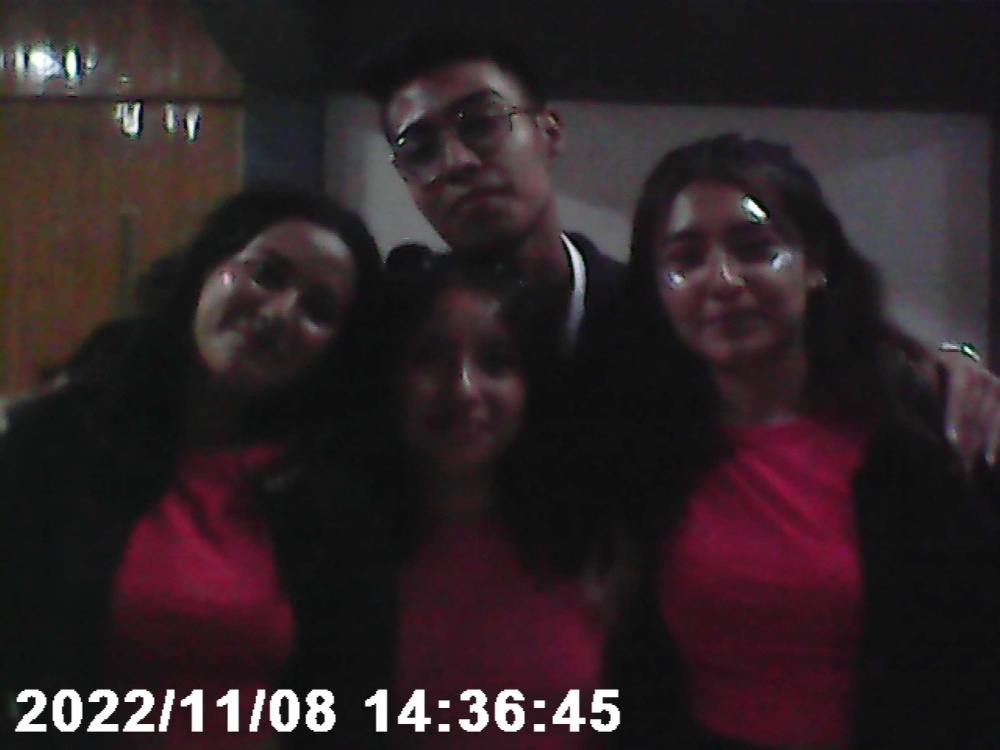

LOVE MYSELF: THE MOST BEAUTIFUL MOMENT IN LIFE PT2
Carta 10: El amor a través del espejo roto
Dedicado a Diana
"Crisis de Identidad", seguramente ya has escuchado este término. Acuñado por el psicólogo Erik Erikson lo describe como un periodo de transición y cuestionamiento profundo sobre sí mismo. Dentro de sus síntomas está que el individuo se siente perdido, que tenga cuestionamientos constantes sobre sí mismo, una sensación de vacío y desorientación, insecurity extrema, aislamiento social, dificultad al tomar decisiones, comparación constante con los demás y la búsqueda impulsiva de cambio.
Lo que experimenté luego de querer que Julia conociera mi verdadero yo y darme cuenta que en realidad no podía siquiera yo saberlo, se le llama Colapso de Identidad Social. Esto sucede muchas veces cuando la persona ha construido su identidad a través de máscaras de manera inconsciente; cuando llega alguien que realmente le importa, esas máscaras se vuelven pesadas.
Seguramente ya te habrás dado cuenta que en muchas de las cartas anteriores he mencionado la palabra máscara pero jamás te he explicado qué significa. El sucesor del maestro Freud y príncipe heredero del psicoanálisis Carl Jung introdujo este concepto de las máscaras y la sombra. Según él las máscaras son esas actitudes que usamos para encajar socialmente, él lo denomina Persona. La Sombra es todo eso que hemos reprimido de nosotros.
Para Jung darse cuenta de que no sabes quién eres es el inicio del camino hacia la Individualización. Cuando la Persona se enfrenta a la Sombra esas máscaras se agrietan. Al querer ser honesto con Julia, me vi obligado a ser honesto conmigo mismo y a descubrir que no tenía un guion propio de esta historia.
Durante las vacaciones de Diciembre del 2022, Paloma, Vania, tú y yo fuimos a San Juan a desayunar, recuerdo que ese día la pasamos genial y que nos tomamos fotografías. Cuando miré esas fotografías, las observé de una forma muy autocrítica ya que por primera vez luego de mucho tiempo, comencé a prestarle atención a mi aspecto. Siempre he tenido inseguridades como mi sonrisa, mi complexión y el acné en mi rostro que siempre me persiguió, pero en esos momentos se intensificarían aún más.
Durante esas vacaciones estaba en un duelo psicológico, había noches en las que no podía dormir ya que me daban mis crisis de identidad que atormentaban mi mente y la inundaban de pensamientos y preguntas, algunas que ni siquiera podía responder. Todo eso me generaba un estrés muy grande con la respiración agitada y el pulso acelerado. Sin embargo no todo estaba perdido ya que iba a llegar Navidad e iba a pasar tiempo con mi familia, algo que siempre he disfrutado. Pero pronto eso cambiaría, ya que esa Navidad sería la última que pasaría con mi familia completa, ya que surgirían problemas familiares que iniciarían una fragmentación en mi familia y en nuestras reuniones.
Enero del 2023, cuando ingresamos de nuevo a la Prepa para terminar nuestro tercer semestre, yo ya no me encontraba bien, tenía demasiadas dudas en la mente y me sentía desorientado. Había veces en las que saliendo de los salones de Física y Matemáticas me escapaba a las gradas a respirar y a veces a soltar unas lágrimas de todo lo que estaba atormentando mi mente. Es por eso que durante este periodo me alejé un poco de ustedes y en algunos recesos no estaba. Como persona me vi obligado a reevaluar mi historia personal y a recordar todo lo que había vivido hasta ese momento lo cual en esos instantes me lastimaba.
Durante este mismo mes, un día te noté algo extraña, cuando vi tu mirada noté que algo no estaba bien, ya que era esa misma mirada que yo conocía, cuando se refleja que algo no está bien. Más tarde por mensaje te pregunté si te encontrabas bien y tu respuesta fue que no, ya que habías terminado con Fernando de forma definitiva porque te causaba muchas inseguridades estar con él.
Yo en esos momentos me sentí mal, ya que me había centrado tanto en mis pensamientos que dejé de lado lo que ustedes estaban viviendo en ese momento, lo que tú estabas viviendo en ese momento. Por lo que te respondí con palabras de aliento, pidiéndote por favor que siguieras adelante; tal vez en esos momentos no sabía cuál era mi propósito como persona, pero en ese instante supe que mi propósito en ese momento era ser ese banco de apoyo emocional para una amiga que estaba en duelo y por alguna razón luego de enviarte ese mensaje salieron lágrimas de mis ojos, el porqué de esto lo sabría mucho más adelante.
Para finales de este mes, Paloma nos invitó a hacer una pizza juntos en su casa, ese día solo fueron Paloma y tú, yo por alguna razón que no recuerdo había llegado más tarde. Ese día jugamos, platicábamos y comimos y sentí la calidez de estar conviviendo entre amigos y pasar un rato juntos; me di cuenta que había cometido un error y que había sido grosero todo este tiempo al querer alejarme de ustedes, pero por alguna razón yo no me sentía bien ese día, tenía tantas cosas guardadas en la cabeza que en una de esas pasé al baño de Paloma a llorar, yo no quería que se dieran cuenta pero cuando salí del baño y me senté, Paloma me pasó una servilleta en donde preguntaba si estaba bien; yo al darme cuenta que en realidad sí se habían dado cuenta y que mostraban preocupación por mí, mi corazón no pudo más y se soltó en llanto.
Luego de eso ambas me abrazaron mientras yo lloraba, no dijimos nada pero no hubo necesidad, ya que en ese momento sentí el apoyo y el no estar solo en esto, que tenía personas con las que podía contar y confiar. Quería decir muchas cosas pero las palabras no me salían, ese día decidí mejor irme, prometiendo que cuando me sintiera mejor hablaría sobre qué me sucedía.
Los siguientes días seguía con mi duelo interior, sin embargo ahora era diferente ya que tal parece que sentirlas que estaban a mi lado, hizo que mi corazón se tranquilizara. En febrero del 2023 seguí hablando con Julia sobre muchas cosas más, ahora nuestras conversaciones eran más diversas y verdaderas, por ahí le di uno que otro detalle pero la gota que derramaría el vaso llegaría. Ya que un día yo le había dicho a Julia que la quería ver, en el pasado ya la había invitado a salir varias veces pero nunca se pudo ya que nuestros tiempos no coincidían, hubo un tiempo donde vinieron unos tíos de ella que eran de Estados Unidos y por ende no podía salir ni nada. El punto es de que esta vez la cité en la escuela en un receso con el pretexto de querer preguntarle qué cosas le gustaban a Paloma para regalarle algo el 14 de febrero que estaba próximo a llegar. Sin embargo esos días como que me anduvo evadiendo hasta que, un día de febrero, a tan solo un par de días para que fuera 14, me llega un mensaje de Julia en donde me pedía disculpas por haberse comportado grosera esos días y que tenía que ser sincera conmigo, en resumen me dijo que ella sentía que yo buscaba algo más que una amistad y que no estaba buscando nada serio con alguien. Me dijo que la perdonara si no era lo que esperaba y que si quería, podíamos seguir siendo amigos.
Al principio me tomó por sorpresa su mensaje, la verdad que no me lo esperaba, pero cuando lo leí no pude evitar sentir tristeza y comencé a llorar, en el fondo sabía su respuesta pero aun así había decidido intentarlo de nuevo y otra vez no se pudo. Lo medité mucho y contesté su mensaje agradeciendo su sinceridad y confesándole mis sentimientos hacia ella. Después quedamos en hablarlo en persona pero los próximos días no coincidíamos en los recesos.
Los retratos son algo que practiqué durante un tiempo, en mi primer año de Prepa dibujé varios a distintas personas, incluso una vez le regalé uno a Julia. Como ya no había podido reunirme con Julia le escribí una carta agradeciendo el tiempo que compartí con ella y diciéndole otras cosas que ya no recuerdo pero al final le di también un segundo dibujo de sus XV años donde aparecía ella con un vestido muy bonito y una fuente por detrás diciéndole que me hubiera encantado estar ese día con ella. Después el mismo 14 de febrero me esperé a que Julia saliera de su salón para darle la carta, pero en un descuido se salió sin que yo me diera cuenta, Paloma la alcanzó a ver en la puerta de salida así que rápido corrí para darle esa carta. Curiosamente ese retrato fue el último que dibujé. Luego de eso ya no volví a hablar con Julia por un buen rato.
Después de esto decidí primero poner orden en mi mente y no dejarme llevar por los pensamientos que aún tenía, un día de estas fechas Paloma me dice que me invita a comer a su casa, que también iba a estar Andrea y tú. Cada que iba a la casa de Paloma, sentía un ambiente de calidez y armonía, su mami doña July era un amor de persona y siempre me hacía sentir en casa cuando iba para allá. Cuando el día llegó, comimos y platicábamos, cuando acabamos de comer, Paloma me reveló el verdadero motivo por el que nos habíamos reunido y ese era que ahora sí querían platicar conmigo sobre lo que me pasó ese día. Así que por primera vez en mi vida decidí no callarme y hablar, contándoles un poco sobre cómo había sido mi vida hasta ese entonces, cómo tenía cosas guardadas y también diciéndoles que son mis primeras amigas y con las que he compartido muchas cosas nuevas, terminando con los 4 abrazados y diciéndome lo mucho que me aprecian y apoyan.
A finales de Febrero se me ocurrió una idea, como el cumpleaños de Paloma se acercaba decidí regalar algo muy especial y simbólico. Como Paloma iba a cumplir 17 años, decidí hacer 17 regalos manuales para ella, yo no era bueno en las manualidades, así que durante 2 semanas estuve viendo tutoriales y diseñando los regalos para ese día; como los iba haciendo uno por uno, hubo un punto donde se me juntaron y ya no tenía dónde guardarlos, como no quería que en mi casa se dieran cuenta, llevé varios regalos a tu casa para que me los guardaras para ese día. Cuando el día llegó le di la sorpresa a Paloma, algo que aún llevo en la memoria.
En ese mismo mes de Marzo, Paloma nos invitó a unas albercas a las cuales decidí no ir por mis inseguridades personales. Recuerdo que ese día fueron Montse, Paloma, tú y Fernando. Tu dinámica con Fernando siempre me resultó extraña, ya que peleaban, se alejaban y volvían a regresar. Hubo una vez que no recuerdo en qué fecha fue que Fernando te fue infiel y aun así lo perdonaste, no comprendía en ese entonces el porqué pero en el fondo me dolía ver cómo estaban jugando contigo y que tú aceptaras los tratos que Fernando te hacía. Tú también estabas en un duelo en ese entonces, ¿verdad?
Los siguientes meses me la pasé muy bien en compañía de Paloma y Andrea, a ti casi no te veía ya que la mayor parte del tiempo estabas con Fernando. En las salidas siempre hacíamos cosas diferentes en el centro, íbamos a comer helado o alguna otra cosa que se nos atravesara, un día Paloma nos presentó su lugar favorito para comer, el cual era un lugarcito enfrente del 3B donde vendían plantas pero también era un lugar para comer. De vez en cuando íbamos a comer ahí.
Había veces en las que no me sentía bien y eso era porque aunque me sentía más liberado emocionalmente, aún tenía esas crisis de identidad que parecían seguirme. Durante este tiempo experimenté varios cambios de estilo de ropa, peinados y sobre mi persona. Hubo un día que saliendo de clases no hablé para nada con Paloma y Andrea. Al llegar al centro ellas ya se iban y yo me había quedado sentado en frente de la iglesia, pero al poco rato regresaron y me preguntaron si me encontraba bien, yo ese día me sinceré con ellas y les conté sobre este sentimiento que tenía, que me sentía perdido y que no sabía ni quién era en realidad. Paloma me dio palabras de aliento y me recomendó visitar un psicólogo cuando pudiera, una idea que no desecharía y cobraría importancia en el futuro.
En Junio del 2023, mandaste un mensaje al grupo pidiéndonos perdón por haberte alejado de nosotros y que sentías que estabas perdiendo nuestra amistad, al final nosotros te dijimos que no te preocuparas, que sabíamos lo que implicaba una relación y que siempre íbamos a estar para ti.
Ese mismo mes fue nuestro concurso de baile como grupo, un concurso que ganamos sorprendentemente, ganándonos el premio de $1,000 el cual lo fuimos a gastar todos a la zona en un bar, recuerdo que convivimos un rato y bebimos, la verdad yo no soy fan del alcohol y el motivo te lo revelaré en la siguiente parte, el punto es de que a Andrea ese día se le pasaron los tragos y se puso un poco mal, también por ahí uno que otro de nuestro salón también.


Ese mismo mes salí con Vania a tomar un café, platicamos un poco del pasado y en una de esas me da una noticia que me impactaría bastante. Pues un chico que yo conocí en la Secundaria llamado Osvaldo, había fallecido recientemente en un accidente. Con ese chico conviví poco, sin embargo era una buena persona, una vez me lo encontré por casualidad fuera de mi casa cuando aún era pandemia, platicamos un rato y luego nos despedimos deseándonos lo mejor para ambos, quién diría que esa sería la última vez que lo vería. Eso me hizo pensar y reflexionar muy profundamente.
Vania, desde donde estés quiero que sepas que yo nunca te guardé rencor, éramos unos niños en secundaria que no sabían lo que hacían o decían, quizás tú también tenías heridas que en esos momentos no podías manejar.
La vida es inherentemente incierta, muchas veces damos por hecho muchas cosas, una de ellas que habrá un mañana para nosotros, pero ¿qué tal si no? Todos los días estamos expuestos a que algo nos suceda y no podemos asegurar con certeza si para el siguiente día estaremos vivos o no, es por eso que me pregunté: "Si mi vida terminara en ese instante, ¿estaría satisfecho con lo que había vivido hasta ese entonces?". Mi respuesta fue clara, un rotundo no. Aún tenía cosas que quería resolver y hacer por lo que con esta nueva perspectiva de vida, me encaminé hacia un nuevo yo, valorando más esos momentos efímeros que vivía y que no estaba disfrutando del todo por estar anclado al pasado.